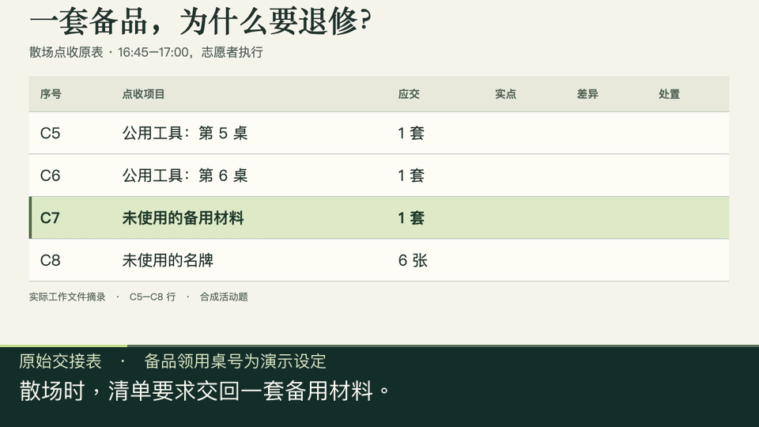

一人成阵 · Solo to Team
新增：四平台各有一个完整包，每包含平台Skill与四款完整基础Skills。选择平台下载。
完整MAS与四平台专用Skill候选
原16席、6群、建队台和原四款Skill保留。三端rc5与Grok design2-doc1/adapter.5已合入同一候选包，平台采用指南随包提供，对应源码可重建为相同字节。
旧Grok design2正文与资料回件核同，有限任务及人工双Bot审阅已核；当前doc1保存读回正文及manifest已逐字核同，旧头部保留，按名调用及五份资料可读仍为对端自报；旧业务证据不移作新版重跑通过；实际调用独证和同Bot新会话接续未验证。没有统一一键安装整队的承诺。历史业务证据保留各自版本范围。
把做了一半的项目交给一支 AI 团队。首席接单，生产官制件，审核官打开成品检查。 中途改条件，团队修订受影响的地方，把通过审核的版本交回原对话。首发模板包含16席、6个建议群、26条建议入群关系。你可以按任务选用岗位，也可以在本机改岗位、群和交接方式。第一单仍可先用首席、生产、审核这三席。

一套备品究竟去了哪里？ 实际的 WorkBuddy 合成题允许第二轮领用一套备品。演示选择第二桌来说明怎样登记。初稿却写死了散场时应交回 1 套。审核官退回后，修订版把“已领用”的应交数改为 0，并要求记下桌号和时间。没有领用时，两版都应交 1 套。查看原表摘录和审核依据 · 播放 25 秒演示 · 中文时间字幕
在自己的电脑上跑第一单
- 下载当前完整ZIP，解压到新的空目录，打开Solo-to-Team → START-MAS-PLUS-SKILLS.html。选择自己已有的平台，按对应说明采用。原MAS建队台与示例仍在包内。
- 选已有可用模型的平台。在首页打开16 席团队配置，按需要选岗位、改分工并保存自己的团队文件。再按该平台入口导出，核实本机目录与权限；导出文件本身不会在账号里建助手。
- 把20 人活动底稿单独给首席。等首席确认 MAP-20-R1，在同一对话发24 人变更。收件时打开执行包和独立审核记录，核对版本，并看散场时应由谁点收、向谁交班。
| 平台 | 第一步 | 三/四席历史观察 |
|---|---|---|
| Grok Bot | 打开自助首单包，核已有席，只建缺席。 | 据本机项目记录，测试者以试用者视角读已知题，指出一个交接问题。现役团队随后修订、复核并回件。 |
| OpenMausBot | 在 0.1.148 的「模板 → 导入」预览部门文件。 | 自定义四席已在隔离的原生数据层导入；首单实跑使用手动建好的三席。 |
| WorkBuddy | 在首页打开安装说明，按本机条件选创建器或 Mac 私有登记。 | 本机私有三席实跑，生产席定向退修，审核席复核 R2。 |
| DeepSeek Harness | 在 0.2.1-rc.5 选择包内工作区，在新根会话用 /solo-to-team。 | 本机标准三席和建队器导出的自定义四席均有实际任务留件。 |
上表是此前三席或四席任务的证据，不等于完整16席已在四个平台全部跑通。四个平台的过程描述来自团队本机观察及留件，未取得平台端运行日志。OpenMausBot 和 WorkBuddy 的过程属团队自述，读者可复算原表摘录。普通新用户独立装队的成功率尚未测量。所列项目自制材料已采用 MIT，允许商用，范围与例外见 NOTICE；本版为发布候选。新增16席候选已完成本机OpenMaus原生导入与回导、顾问团审核助理链，以及DeepSeek Harness两子会话的变更与局部退修。各项范围、审批模式和附件限制见本轮16席验证记录。